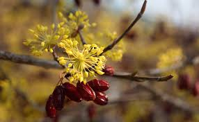
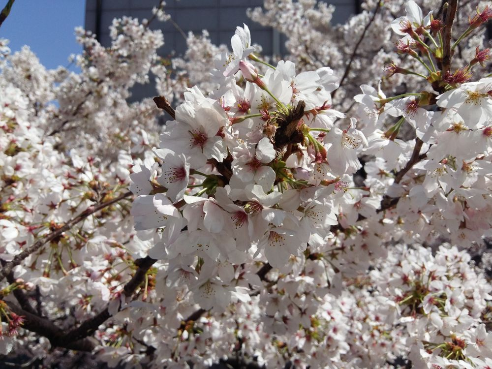

봄에 피는 꽃
매화
매실나무는 장미과에 속하는 나무로, 매화나무라고도 한다. 꽃은 3~4월에 잎이 나기 전에 피고, 열매는 6~7월에 동그랗게 익는다. 열매를 매실이라 하여 먹는다. 꽃말은 충실이다

산수유
층층나무과의 낙엽교목인 산수유나무의 열매이다. 타원형의 핵과(核果)로서 처음에는 녹색이었다가 8~10월에 붉게 익는다.
종자는 긴 타원형이며, 능선이 있다. 약간의 단맛과 함께 떫고 강한 신맛이 난다. 10월 중순의 상강(霜降) 이후에 수확하는데,
육질과 씨앗을 분리하여 육질은 술과 차 및 한약의 재료로 사용한다.

벚꽃
고려시대에 몽골군의 침입을 부처님의 힘으로 막기 위해 만들었던 팔만대장경의 판은 60%이상이 산벚나무로 만들어졌음이 최근 전자현미경을 이용한 조사에서 밝혀졌다.
조선 중종 9년(1514)에 서경(書經)의 글자를 쓴 족자는 해태(海苔)로 종이를 만들고 벚나무 껍질로 조각하여 글자를 만들었다는 기록이 있다.
대부분의 나무들이 껍질이 세로로 갈라지는 데 비해 산벚나무 포함한 벚나무 종류들은 가로로 짧은 선처럼 갈라지면서 표면이 거칠지 않고 매끄럽다.
또한 산벚나무는 계곡이나 나지막한 언덕배기 등에서 잘 자라므로 몽골군이 점령한 육지에서 몰래 한 나무씩 베어 가까운 강으로 운반하기에 안성맞춤이었을 것이다.
나무는 짙은 적갈색으로서 조직이 치밀하여 전체적으로 고운 느낌을 준다. 너무 단단하지도 않고 무르지도 않고 잘 썩지도 않아 가공하기가 쉽다.
자라는 장소나 나무의 재질이 목판인쇄의 재료로 알맞았다.
